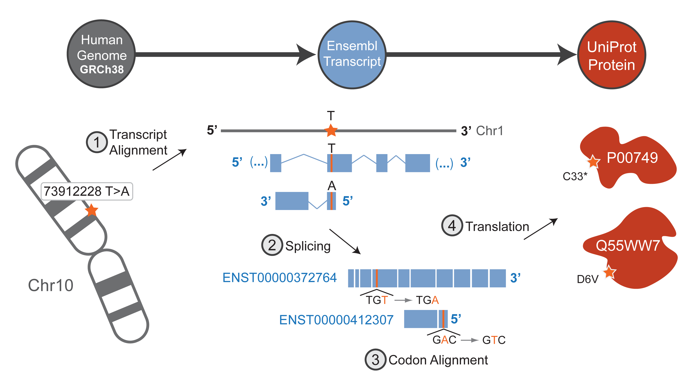

BISQUE (The Biological Sequence Exchange) is a bioinformatics tool enabling locus and variant-specific conversion among human gene, transcript, and protein identifiers from several popular databases. BISQUE implements a graph-traversal algorithm to allow conversion between any two database identifiers, including biologically downstream (gene -> transcript -> protein) and upstream conversions (protein -> transcript -> gene). All major functionality of BISQUE is available via this web interface, a URL-based web service, and a downloadable command-line tool, which includes a python module and deployable MySQL database.
The home page of BISQUE features a form with three fields: identifier, position, and mutation, as shown in the fully-functional example below.
Identifier: The identifier is the chromosome (i.e. chrX or chr7), gene, transcript, or protein that you wish to convert (for example: an Ensembl transcript or UniProt protein). This is the only required input to perform a conversion with BISQUE.
Position: You may also indicate a position or locus relative to the provided identifier. Positions for all identifiers (excluding PDB) are 1-indexed, so 1 indicates the first nucleotide in a chromosome, gene, and transcript, and the first amino acid in a protein. Converting an identifier and position can be done without filling in the Mutation field, and will simply indicate the corresponding position relative to your converted identifier. Important: By default, transcript positions are treated relative to their entire sequences. However, when performing batch queries, the CDS checkbox may be toggled, so that positions are treated relative to the transcript's coding sequence.
Mutation: A unique and powerful feature of BISQUE is its ability to convert mutations in the context of one identifier to another. In order to provide a nucleotide mutation (for genomic loci, genes, and transcripts) or an amino acid substitution (for proteins), you must have filled out the Position field as well. Mutations and substitutions should be provided in a two-letter from-to format, For example GC means a G nucleotide is mutated into a C.
Try it yourself! Click the button to cycle through several sample inputs, and try converting each to any other identifier!
Batch Input
BISQUE's batch input feature is very useful for quickly converting multiple inputs at once. To access the batch input interface, click the "+" button on the home page, to the right of the position form. Every identifier must be entered in one of a few recognized formats (one being the condensed input format mentioned above). Other acceptable formats for the same query can be found in the batch input instructions on the home page.You can also upload and append an entire text file of mutations to the Batch Input text box. Your data file must contain inputs in one of the prescribed formats, with one entry per line.
Web Service
BISQUE also supports a URL-based web service, which outputs results in an easy-to-parse plain text format and can be incorporated into scripts. Simply enter http://bisque.yulab.org/cgi-bin/run.cgi?id=<identifier>&output=<output type>&position=<position>&mutation=<mutation> into the URL address bar in your web browser. Replace the content in brackets with your own values, and remove the brackets before executing the query. The only two mandatory options are id and output. URL queries are outputted in a simple, easily-to-parse format. The output will appear in a plain text format, and each output entry is separated by a line break. The entries themselves appear in the following space-delimited format: <input identifier> <input mutation> <input position> <output identifier type> <output mutation> <output position>. A list of all valid identifier types for the "output identifier type" entry can be found here. All fields which are not relevant to the conversion or could not be mapped (i.e., the mutation field when no mutation was inputted) will appear as "-" instead of being excluded, in order to maintain the format. Please try the following example query to preview the plain text output format. Paste the following into the address bar in your browser: http://bisque.yulab.org/cgi-bin/run.cgi?id=Q8N9Y4&output=enst&position=87&mutation=LQ. You should see output similar to the image below. The web service also includes usage of the following boolean options: "canonical", "quality", "swissprot", and "cdna". These options are triggered when given a value of "y" and are disabled when given a value of "n". For example, adding "canonical=y" to the GET request will filter out any non-canonical identifiers. More detail about all of these options can be found in the command-line application section. In addition, the web service has the "build" option. If set to "old", the GRCh37 build will be used, while if it is set to "new", then the GRCh38 build will be use. It does use GRCh38 by default, however.
Programmatic Access
In addition to its web service, BISQUE queries can be computed programmatically. The following two examples demonstrate this feature in both Python and Perl. Keep in mind that the only mandatory parameters are 'id' and 'output'. To exclude mutation or position, simply remove them from the parameter dictionary.
Python
import urllib,urllib2,json
url = 'http://bisque.yulab.org/cgi-bin/run.cgi'
params = {'id': 'ENST00000380618','output': 'uniprot','position': '78','mutation': 'CA'}
data = urllib.urlencode(params)request = urllib2.Request(url, data)response = urllib2.urlopen(request)page = response.read(2000000)
output_data = json.loads(page)
Perl
use strict;use warnings;use LWP::UserAgent;my $base = 'http://bisque.yulab.org/cgi-bin/run.cgi';my $params = {id => 'O14607',output => 'hg38',position => '98',mutation => 'HD'};my $agent = LWP::UserAgent->new(agent => "libwww-perl");push @{$agent->requests_redirectable}, 'POST';my $response = $agent->post("$base/", $params);while (my $wait = $response->header('Retry-After')) {print STDERR "Waiting ($wait)...\n";sleep $wait;$response = $agent->get($response->base);}$response->is_success ?print $response->content :die 'Failed, got ' . $response->status_line .' for ' . $response->request->uri . "\n";
BISQUE not only functions as a webserver, but it can also be downloaded and installed as a command line tool. There are two different installations: BISQUE Lite and BISQUE Full.
Both versions of BISQUE include the same core functionality, however BISQUE Full does not require any internet connection, as it stores all data files locally on your computer. This allows for far greater customizability, including the option to add new genomic, proteomic and transcriptomic identifiers to the conversion graph. This will be covered in the advanced section. Note that every feature in the advanced section is reserved for BISQUE Full.
BISQUE Lite, is much a much lighter software. The downside is that any computations and conversions require a constant internet connection, as the conversion databases will not be stored locally on your machine.
In order to view the command line options, enter bisque -h into your command line. You should see something similar to the image below. If you are using BISQUE Lite, then not all of these options will be available to you.
This section will demonstrate some simple conversions using the basic options mentioned in the previous section.
Mapping between identifiers:
The identifier types that come with BISQUE can be found here. Mapping from an instance of one identifier to the other involves a simple input of the following format: bisque -i [INSTANCE OF IDENTIFIER TYPE] -o [DESTINATION IDENTIFIER TYPE] You may also choose to include the additional option -t, which tells BISQUE your input identifier type. However, this is only necessary if you are converting from an identifier which was not mentioned as one of BISQUE's identifier types. Here is an example input, which converts from a UniProt protein identifier to the GRCh38 chromosome which it originated from: bisque -i P48436 -o hg38. Here the -t option is unnecessary because UniProt is a core type of the BISQUE conversion chart, and can be recognized by regular expression matching.
Mapping between identifiers AND mutation/position pairs:
BISQUE also allows you to easily attach positions and mutations to your identifier and map those as well. For example, if you want to mutate the first amino acid of KRAS (UniProt P01116) from "M" to "V" to find the exact chromosome, loci, and nucleotide mutations that could have resulted in the mutated protein, you would execute the following command: bisque -i P54845 -p 1 -m MV -o hg38.
BISQUE Full Options
In addition to some options described above, another option available only to BISQUE Full is the versbosity option (-v or --verbosity). This has three levels: 0,1,2. This has three levels: 0, 1, and 2. Level 0 verbosity (default) gives no information regarding the calculations used and the nodes traversed in the process of computing a conversion. Level 1 verbosity gives detail about the traversal across the identifier graph to convert your input node to your desired output node. Level 2 verbosity details the path taken through the identifier graph and displays the calculations used to convert mutation and position at each step. Level 2 is primarily used for developer debugging, but can also provide a peek into the inner-workings of BISQUE.
Config Options
Since all data files are stored locally in BISQUE Full, users have much greater freedom for customization through the config.py script located in the root directory of the BISQUE Full download. Run the script by typing python config.py -h to be presented with the following command line options.
BISQUE can also be used as an importable python module, accessible to both BISQUE Full and Lite users. During installation, you must provide the installer with permission to access your Python path. After installation of either distribution of BISQUE, the package may be imported with the following command: import bisque_tools.bisque. The primary method used to compute a conversion is convert(id, type, output, mutation=None, position=None,all=False,best=False,specific=False). Below is an explanation of each argument.
This method outputs the final mapping as a dictionary list (there maybe be multiple dictionaries depending on how many outputs they are). Each outputs is represented as a dictionary that gives the position, type, mutation and output value of any given output. For example, bisque_tools.bisque.convert(id="ENST00000389354", type="enst", output="uniprot", mutation='AG', position=1) returns [{'position': 1, 'type': 'uniprot', 'mutation': 'MV', 'value': 'A5PLN7-2'}]. This output requires no parsing as it is a native Python data structure.
BISQUE utilizes a modular node graph design. The image below is a visual representation of this design. This graph reveals all indentifier types contained in BISQUE. Identifier types are strings which are recognized by BISQUE as references to a node in the graph. For example, referencing Ensembl Transcript as either an input or output type would require 'enst' as a reference, in order for BISQUE to know which node to start, or end, on. Examples of this can be found in the above sections.
The full list of identifier types contained in BISQUE is as follows:
An example showing the steps for conversion of a genomic variant to UniProt amino acid substitution(s) is shown below by taking a conversion path through Ensembl transcript. The shown genomic variant maps to two Ensembl transcripts, one in the forward direction and one in reverse. BISQUE uses genomic alignments of transcripts from Ensembl's database, removes introns, and codon aligns the result to match amino acids in UniProt proteins.
BISQUE is based off of the latest genome build, GRCh38, and all data files are updated every six months. It also supports archived GRCh37 versions of the files below. BISQUE obtains its annotated data files from three different FTP sources: